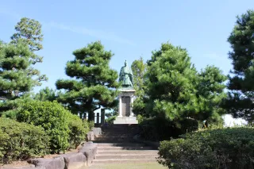
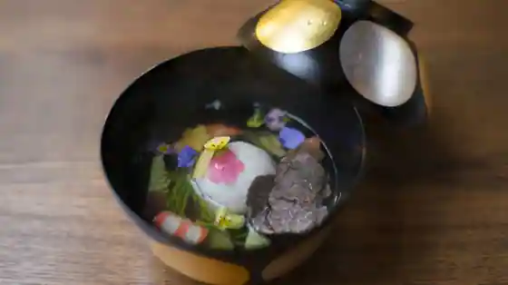

Japan / Ishikawa / Komatsu
Komatsu · Ishikawa
Komatsu
Highlighted on the Ishikawa map.

Komatsu City Hall

Sights · Things to do · Places to eat · Places to stay · Day-to-day services
Nearby in Ishikawa: ← Kawakita · Nakanoto →
Other towns: Anamizu · Hakui · Hakusan · Hodatsushimizu · Kaga · Kahoku · Kanazawa · Kawakita · Nakanoto · Nanao · Nomi · Nonoichi · Noto · Shika · Suzu · Tsubata · Uchinada · Wajima
All towns in Ishikawa · Back to all prefectures